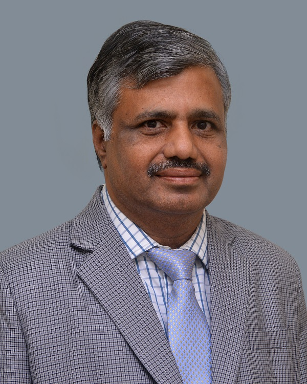
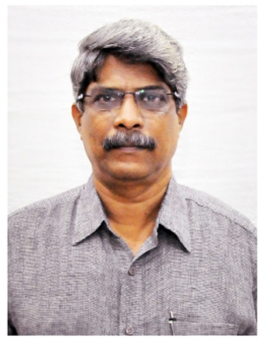

“Committees are to get everybody
together and homogenize their
thinking."
- Art Linkletter

About the Committee
Patron

Prof. Dr.P.DURAISAMY, Ph.D., D.Econ.Sc,[Paris]
VICE - CHANCELLOR
UNIVERSITY OF MADRAS
Co-Patron

Prof. R.SRINIVASAN, PhD.,
REGISTRAR
UNIVERSITY OF MADRAS
Convener
 Prof.Dr.E.MURUGAN, PhD.,FRSC.,
Prof.Dr.E.MURUGAN, PhD.,FRSC.,
Director - Guindy Campus,
and
Professor & Head,
Department of Physical Chemistry
Our Committee Members from various places of the world.
INTERNATIONAL ADVISORY COMMITTEE
- Prof. Dr. Sumio Iijima, Discoverer of CNT”, Meijo University, Japan.
- Prof. Dr. Warren T. Ford, Oklahoma State University, USA.
- Prof. Nicholas A. Kotov, University of Michigan, USA.
- Prof. King-Chuen Lin, NTU, Taiwan.
- Prof. Peer M. Sathikh, Nanyang Technological Univ., Singapore.
- Prof. Ta. Jen Yen, NTU, Taiwan.
- Prof. Dr. Emil Roduner, University of Stuttgart, Germany.
- Prof. Dr. Elena A. Rozhkova, Argonne Laboratory, USA.
- Prof. Dr. Dongil Lee, Yonsei University, S.Korea.
- Prof. Dr. Shen-Ming Chen, NTUT, Taiwan.
- Prof. K. M. Nalin de Silva, University of Colombo, Sri Lanka.
- Prof. Shlomo yitzchaik, The Hebrew University of Jerusalem, Israel.
- Dr. Dev Swarup, Additional Secretary, UGC, New Delhi.
NATIONAL ADVISORY COMMITTEE
- Prof. Dr. T. Balakrishanan, Former Vice-Chancellor, Periyar Univ.
- Padma Shri. Prof. Dr. G. D. Yadhav, Vice-Chancellor, ICT-Mumbai
- Padma bhushan. Dr. T. Ramasami, Former Secretary, DST, India
- Prof. Dr. H. Devaraj, Former Vice-Chairman, UGC, New Delhi.
- Prof. Dr. V. Murugesan, Vice-Chancellor, Annamalai University.,
- Prof. Dr. P. Manisankar, Vice-Chancellor, Bharathidasan University.,
- Prof. Dr. Ramesh Choudhary, Vice-Chancellor, APG Shimla Univ. Prof.
- Dr. Sabu Thomas, Vice-Chancellor, Mahatma Gandhi Univ.
- Prof. Dr. Gumeet Singh, Vice-Chancellor, Pondicherry Univ.
- Prof. Dr. S. Sivaram, IISER, Pune.
- Prof. Dr. S. Ramakrishnan, IISc, Bangalore
- Prof. Dr. Anunay Samanta, Univ. of Hyderabad
- Prof. Dr. M. Jayakannan, IISER, Pune.
- Prof. Dr. Girish Kumar, KUSAT, Kerala.
- Prof. Dr. S. Natarajan, IISc, Bangalore
- Prof. Dr. Ramesh Chandra, University of Delhi.
- Prof. Dr. Sunil K Sharma, University of Delhi.
- Shri. Dr. Skekhar C Mande, DG-CSIR, New Delhi.
- Shri. A. Chakraborty, Head-CSIR, New Delhi.
- Shri. Dr. N.B. Bhoi, CSIR, New Delhi.
- Shri. Dr. Renu Swarup, Secretary, DBT, New Delhi.
- Shri. Dr. Pramod Kumar Prasad, SERB, New Delhi.
- Shri. Dr. Premila Mohan, SERB, New Delhi
- Shri. Dr. Sivaji Chadaram, DST, New Delhi
- Shri. Dr. Amitava Roy, SERB, New Delhi.
- Shri. Dr. S. V. Prasanna, Member Secretary, SERB, New Delhi
- Shri. Dr. Arvind Chaudhary, SERB, New Delhi.
- Dr. Manju D Choudhary, Editor, IJCT, CSIR-NICOR, New Delhi.
- Dr. R. S. Jayasomu, Editor, CSIR-NISCAIR, New Delhi.
- Prof. Dr. T. Raja, NCL, Pune.
- Prof. Dr. K. Selvaraj, NCL, Pune.
- Prof. Dr. Kannan Srinivasan, CSIR-CSMCRI, Bhavnagar.
- Prof. Dr. B. Viswanathan, IIT-M, Chennai.
- Prof. Dr. D. C. Kothari, MUMBAI UNIVERSITY, Mumbai.
- Prof. Dr. Mangala Sunder Krishnan, IIT Madras, Chennai.
- Prof. Dr. S. Sampath, IISC, Bengaluru.
- Prof. Dr. N. Viswanadham, CSIR, IIP, Dehradun.
- Prof. Dr. Lakshmi Kantam Mannepalli, ICT, Mumbai.
- Prof. Dr. B.M. Reddy, CSIR-IICT, Hyderabad.
- Prof. Dr. N. Lingaiah, CSIR-IICT, Hyderabad.
- Dr. Sanjay P. Kamble, NCL, Pune.
- Dr. K. Selvaraj, NCL, Pune.
- Dr. Gurram Kishan, Site Director, SABIC, Bangalore.
- Prof. Dr. K. Shanthi, Anna Univ., Chennai.
- Prof. Dr. A. Pandurangan, Anna Univ., Chennai.
- Prof. Dr. N. Rajenderan, Anna Univ., Chennai.
- Prof. Dr. A. Jayavel, Anna Univ., Chennai.
- Prof. Dr. T. Pradeep, IIT-M, Chennai.
- Prof. Dr. P. Rajakumar, UNOM, Chennai.
- Prof. Dr. S. Sriman Narayanan, Pro-VC, Vels Univ, Chennai.
- Prof. Dr. S. Ramaprabhu, IIT-Madras, Chennai.
- Prof. Dr. P. Selvam, IIT-M, Chennai.
- Prof. Dr. D. Velmurugan, UNOM, Chennai.
-
ORGANIZING COMMITTEE
- Prof. E. Murugan, Ph.D., FRSC., Physical Chemistry, UNOM.
- Prof. M. Palanichamy, Ph.D., Emeritus Professor, UNOM.
- Prof. A. K. Mohanakrishanan, Ph.D., Org. Chemistry, UNOM.
- Prof. K. Ravichandran, Ph.D., Analytical Chemistry, UNOM.
- Prof. A. Sultan Nasar, Ph.D., Polymer Science, UNOM.
- Prof. K. Pandian, Ph.D., Inorganic Chemistry, UNOM.
- Dr. T. M. Sridhar, Ph.D., Analytical Chemistry, UNOM.
- Dr. B. Muthuramaan, Ph.D., Energy, UNOM.
- Dr. A. Murugadoss, Ph.D., Inorganic Chemistry, UNOM.
- Prof. N. Mathivanan, Ph.D., CAS. Botany, UNOM.
- Prof. Elangovan Vellaichamy, Ph.D., Biochemistry, UNOM.
- Prof. C. Venkateswaran, Ph.D., Nuclear Physics, UNOM.
- Prof. S. Janarthanan, Ph.D., Zoology, UNOM.
- Prof. P. Karthe, Ph.D., Crystallography & Biophysics, UNOM.
- Prof. S. Elumalai, Ph.D., Biotechnology, UNOM.
- Prof. S. Balakumar, Ph.D., NCNSNT, UNOM.
- Prof. Rita John, Ph.D., Theoretical Physics, UNOM.
- Prof. Shaik Mohammad Hussain, Ph.D., Geology, UNOM.
- Prof. R. R. Krishnamurthy, Ph.D., Applied Geology, UNOM.
- Prof. D. Nedumaran, Ph.D., Central Instrumentation, UNOM.
- Prof. K. Sivaji, Ph.D., Material Science, UNOM.
- Prof. G. Anbalagan, Ph.D., Network System and IT, UNOM.
- Prof. M. Dharmendira Kumar, Ph.D., Anna University, Chennai.
- Dr. A. Sivasamy, Ph.D., CSIR - CLRI, Chennai
- Prof. Dr. V. Subramanian, Ph.D., CSIR - CLRI, Chennai.
- Dr. T. Narasimhaswamy, Ph.D., CSIR - CLRI, Chennai.
- Dr. S.N. Jaisankar, Ph.D., CSIR - CLRI, Chennai.
- Dr. P. Shanmugam (Org), Ph.D., CSIR - CLRI, Chennai.
- Dr. P. Shanmugam (Env. Eng.), Ph.D., CSIR - CLRI, Chennai.
- Prof. Dr. A. Ilangovan, Ph.D., Bharathidasan University, Trichy.
- Prof. Dr. A. Senthilkumar, Ph.D., VIT, Vellore.
- Prof. Dr. A. Sakthivel, Ph.D., Central University of Kerala, Kasargod, Kerala.
- Prof. Dr. M. Sasidharan, Ph.D., SRM University, Kattangulathur, Chennai.
- Prof. Dr. A. Abdul Jabbar, Ph.D., Principal, The New College, Chennai.
- Prof. Dr. T.K. Shabeer, Ph.D., The New College, Chennai.
- Prof. Dr. S. Muniraj, Ph.D., RKM Vivekananda College, Chennai.
- Prof. Dr. K. Arivazhagan, Ph.D., Govt. Arts College, Nandanam, Chennai
- Prof. Dr. M.J. Umapathy, Ph.D., Anna University, Chennai.
- Dr. A. Siva, Ph.D., MKU, Madurai.
- Dr. P. Gopinath, Ph.D., Alpha College of Engineering, Chennai.
- Dr. K. Muthu, Ph.D., MSU, Thirunelveli.
- Dr. R. Rangasamy, Ph.D., Gurunanak College, Chennai.
- Dr. G. Vimala, Ph.D., Chellammal women's College, Chennai.
- Dr. G. Thamizharasan, Ph.D., Pachaiyappa's College, Kanchipuram.
- Dr. D.P. Geetha Rani, Ph.D. MNR Degree and PG College, Hyderabad.
- Dr. J. Nimita Jebaranjitham, Ph.D., Women's Christian College, Chennai.
- Dr. A. Rupavathi Jayapriya, Ph.D., Paavai Arts & Sci. college for Women, Salem.